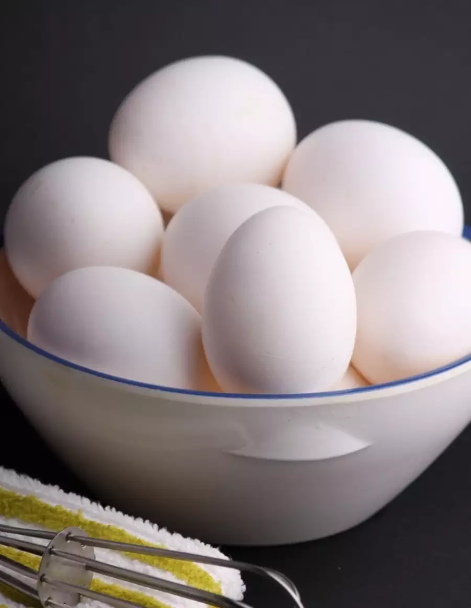

I find immense joy and fulfillment in the simple pleasures of life. I love to channel my creativity into making art and craft, turning everyday materials into beautiful creations that reflect my imagination. Cooking is another passion that allows me to express myself through flavors and culinary experiments, turning raw ingredients into delectable dishes that bring people together. But what truly warms my heart is the precious time spent hanging out with my father, creating lasting memories and deepening our bond. And when wanderlust strikes, I embark on adventures to explore new places, where I discover the rich tapestry of cultures, savor unique cuisines, and collect experiences that enrich my soul. These passions define me, adding vibrant colors to the canvas of my life.
Eggs are a fantastic favorite for several reasons. Firstly, they're incredibly versatile and can be prepared in numerous ways, from simple scrambled eggs to elaborate quiches and omelets. Their versatility makes them suitable for any meal, be it breakfast, lunch, or dinner. Secondly, eggs are a great source of high-quality protein, vitamins, and minerals, making them a nutritious choice. Lastly, the taste of eggs is deliciously satisfying, whether you prefer them soft and runny or fully cooked.
The image of eggs is as shown below:
